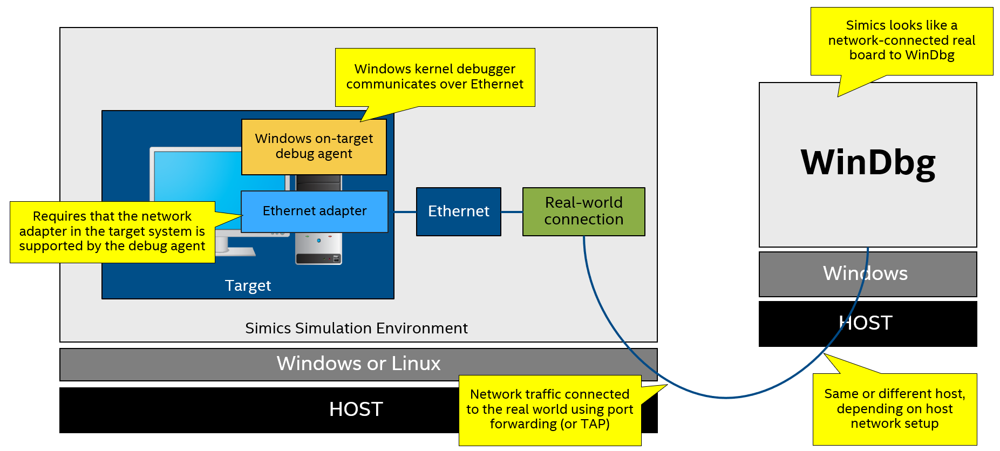

This chapter uses
QSP-x86model as an example target platform model. Some of the instructions will need to be adjusted to the particular target model where it differs fromQSP-x86model.In order to be able to adapt
QSP-x86examples to the particular target model familiarity with target model and general Simics environment is required.
Windows kernel debugging configuration in Simics could be created in such a way, that Windows debugger client connects to the target kernel debugger via a real network. More specifically, Windows kernel running on Simics target systems communicates with Windows kernel debugger running on real host over a real network connection (figure 1). For more detailed information about setting the network connection up please refer to “Windows Kernel Debugging Over a Network” (section 2).
